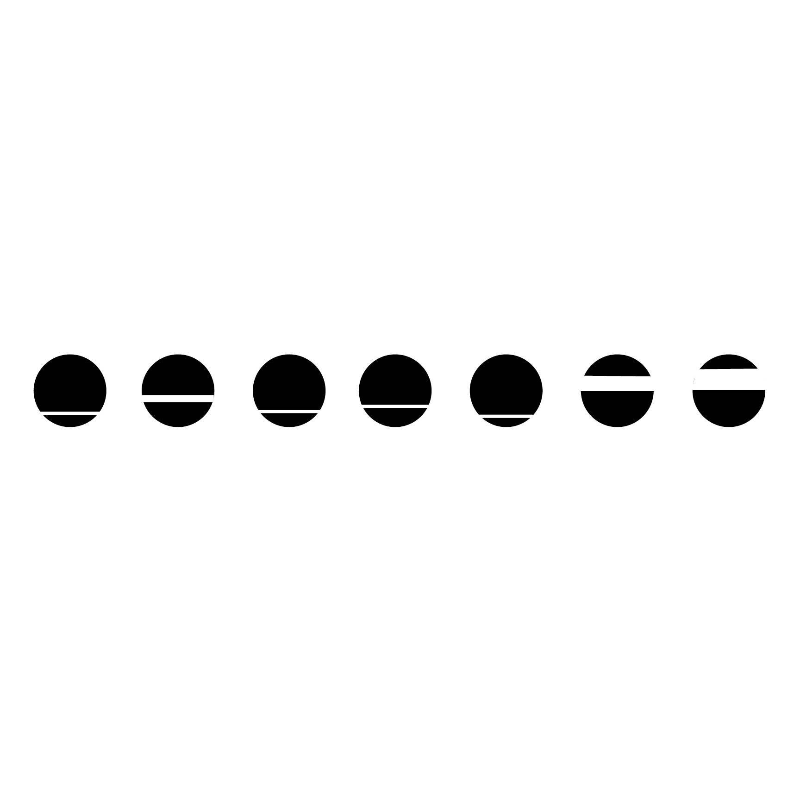
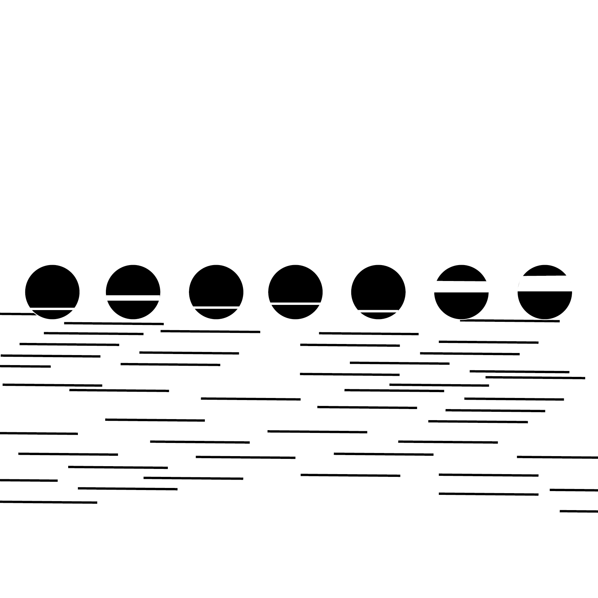
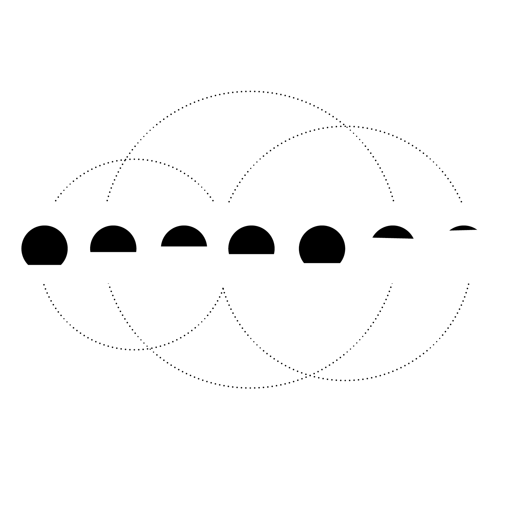
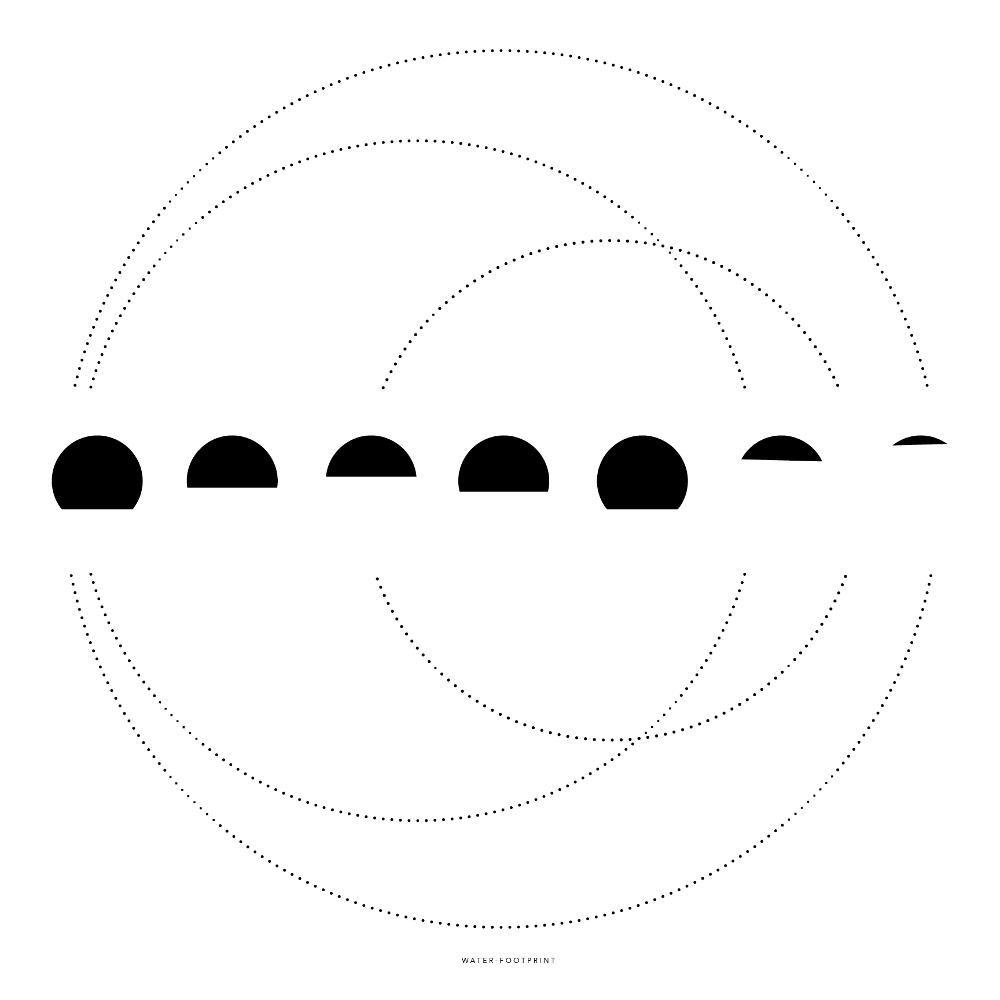

CONNECTIONS
The Connections project was showing the process of how to use data to crate a imagery. A designer needs to be able to process data to create design that is aesthetically pleasing, as well as, fit the information that has been given to them. All the images were created with point, line, and plane and only have a small title at the bottom. This process also showed how positive and negative space can creat un wanted teshon and should be balanced with the weight of the point, line, or plane.



